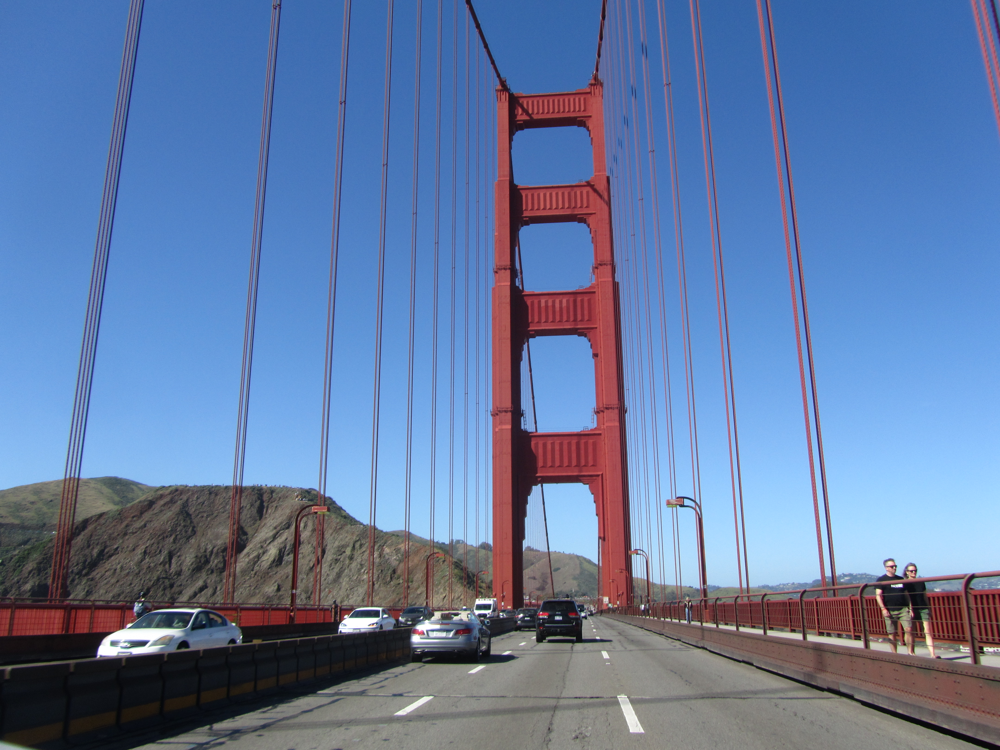

Who I am
About
Throughout my career I have intentionally sought out projects that align with my passion for community development and social impact.
Growing up in the suburbs of DC, I spent weekends volunteering at food distribution centers and events in low-income neighborhoods. That's where my commitment to building more equitable communities became personal.
I studied Construction Engineering in undergrad at Virginia Tech with the intention of leveraging my skills toward tangible solutions for vulnerable populations. I thought that if I could decrease the cost of construction, I could contribute to solving the affordable housing crisis. That took me to hospital expansions in Chicago and LA, and to managing affordable housing renovations at NYCHA in East Brooklyn.
Though I loved what I did, I kept running into the gap between what gets built and who it actually serves. No matter how efficiently you build, what determines who can afford to live somewhere is policy.
I could only build what had already been decided.That pushed me to start doing my own research to understand how construction projects transform neighborhoods and who gets pushed out in the process.
That's what brought me to Penn. At Weitzman I've been learning how to ask better questions about cities using data. I've had the opportunity to work with amazing researchers and present my own work at the Association of American Geographers conference in San Francisco. The methods are different than they used to be but the goal is the same one I've been working toward since those weekends in DC.
I am committed to working in spaces where research reaches the people who need it most.

Hendrix and I graduated from Virginia Tech together! He studied hard and I am so proud of him.

My friends and I called ourselves the Cloud Chasers. When someone would spot a good sunset, we'd all rush to the top of the parking garage.

Using my highly developed engineering skills to stand on a concrete block with a level.

The Philadelphia Flower Show was a beautiful reminder of the city's vibrant culture.

The day I learned the toasting tradition!

Structural engineering in action!

Hendrix dressed as a construction engineer! Like mother, like son.

The view from my rooftop in New York. We threw quite a few kickbacks and parties up here.

Some sidewalk work on the NYCHA Fairstead project in East Brooklyn.

The vestibule went in first for security, then we started on the facade. This was us on our way to an interior walkthrough here.

These mammatus formations are rare and a little ominous.

Exploring San Francisco after presenting at the AAG Annual Meeting.